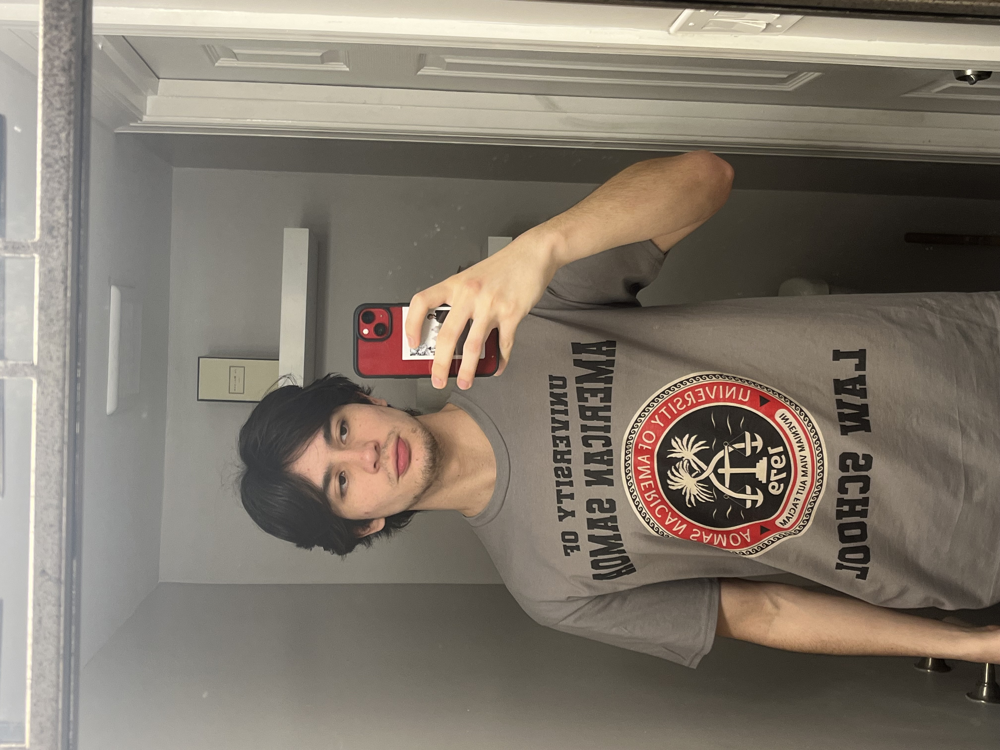

Donovan's Portfolio!
About Me

My Github account
Hey! my name is Donovan Weber. Im a novice coder from the great
city and state of Silver Spring, Maryland. I grew up around Washington D.C. my whole life.
FUN FACT: Famous Comedian Dave Chappelle
grew up and lived in Silver Spring too.
Here are some of my projects!
-
My First Webpage: This is my first attempt at a webpage with
Epicodus.It uses html only and contains basic information on the objectives of the first
week of class at Epicodus.
-
Favorite Things: My favortie things webpage was made using html and stylizied
with html. I shared the work on this project with a member from dev team. The webpage talks about
my favorite foods and websites.
-
Animal Shelter: This webpage is about a a fake animal shelter made with HTML and stylizied
with CSS. I worked on this project with a different member of my dev team. The webpage offers pictures
of pretend adoptable animals and links to their pretend pages.
-
Boring Lecture: Boring Lecture is a webpage that is written in html and stylizied by css.
This webpage includes colorful text and a picture of a bored clown. This project has to be my
personal favorite not because of the design or lack of but it was the first time I had fixed a
bug and the satisfaction of figuring it out was very blissful.